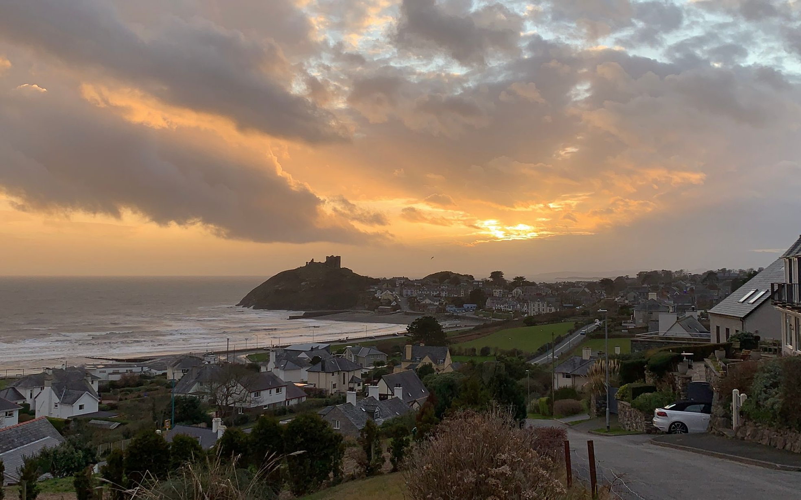

Uma jornada épica do Kentucky ao Burundi pelo País de Gales e Ucrânia

Conheça um pouco mais sobre a localização dos seus amigos
Cada pessoa é um artista livre, chamado a transformar as
condições, pensamentos e estruturas que moldam nossas vidas.
— Joseph Beuys
A cidade de TripleTen reuniu profissionais de diversos cantos do
mundo. Hoje, a Galeria de Arte TripleTen tem o orgulho de apresentar
histórias e fotos de algumas das pessoas que dedicam seu tempo e
esforço para fazer com que os futuros profissionais de tecnologia
desta cidade se sintam em casa. Cada um de nós tem uma história
única sobre o lugar de onde viemos. Sinta-se à vontade para
adicionar sua própria história e uma obra de arte visual dedicada à
sua cidade natal à nossa coleção. Não importa de onde você é,
estamos felizes por você ser nosso vizinho.
Criccieth, País de Gales
ARTISTAS
Steffan Warren, editor-chefe Kseniya Glagoleva, gerente de
projeto
A ruína medieval do Castelo de Cricieth tem vista para a
cidade abaixo de uma rocha que se projeta para o mar.
Acredita-se que tenha sido construído por Llewelyn, o Grande,
no século XIII. Cerca de 900 anos depois, a auto-intitulada
*Pérola de Gales nas margens de Snowdonia* tornou-se um
destino turístico popular durante os meses de verão.
A uma curta caminhada da estrada do castelo, você pode
desfrutar do melhor sorvete do mundo no Cadwalader's, cujo
ingrediente secreto, segundo rumores, são algas marinhas de
origem local. Outra reivindicação à fama é o fato de que
Criccieth ganhou o prêmio *Wales in Bloom* por cinco anos
consecutivos por suas espetaculares exibições florais pela
cidade. Foi também a casa de David Lloyd George, o único galês
a ocupar o cargo de primeiro-ministro do Reino Unido.
Berea, EUA
ARTISTA
Travis Turner, autor e editor
Berea é uma pequena cidade localizada na parte central do
Kentucky. A cidade é cercada por belas florestas e campos. É
conhecida como a capital do artesanato do estado, e os
visitantes encontrarão muitas oportunidades de compras: lojas
com bijuterias artesanais, velas, artigos de madeira,
galerias, ateliês de vidro e muito mais. A cidade realiza um
festival anual que celebra o "pão de colher", um prato local
feito com pão de milho e servido com uma colher de pau.
No entanto, provavelmente é mais conhecido pela faculdade
local. O Berea College foi fundado em 1855 e foi o primeiro
colégio no sul a ser racialmente integrado, bem como o
primeiro a ser misto. De forma um tanto singular, não cobra
mensalidades - todo aluno recebe uma bolsa de estudos
integral.
Muramvya, Burundi
ARTISTA
Steffan Warren, editor-chefe Kseniya Glagoleva, gerente de
projeto
A ruína medieval do Castelo de Cricieth tem vista para a
cidade abaixo de uma rocha que se projeta para o mar.
Acredita-se que tenha sido construído por Llewelyn, o Grande,
no século XIII. Cerca de 900 anos depois, a auto-intitulada
*Pérola de Gales nas margens de Snowdonia* tornou-se um
destino turístico popular durante os meses de verão.
A uma curta caminhada da estrada do castelo, você pode
desfrutar do melhor sorvete do mundo no Cadwalader's, cujo
ingrediente secreto, segundo rumores, são algas marinhas de
origem local. Outra reivindicação à fama é o fato de que
Criccieth ganhou o prêmio *Wales in Bloom* por cinco anos
consecutivos por suas espetaculares exibições florais pela
cidade. Foi também a casa de David Lloyd George, o único galês
a ocupar o cargo de primeiro-ministro do Reino Unido.
Belo Horizonte, Brasil
ARTISTA
Graielle Damazio, estudante de desenvolvimento web
Belo Horizonte é uma cidade vibrante e acolhedora, conhecida
pela hospitalidade de seu povo, pela culinária mineira e por
ser o lar de grandes cantores e poetas. Um exemplo marcante é
o movimento Clube da Esquina, que revelou artistas como Milton
Nascimento e Lô Borges, levando a música mineira para o mundo.
E, claro, não dá para falar de BH sem mencionar o famoso pão
de queijo, símbolo da cidade e paixão nacional.
Além disso, a capital mineira foi uma das primeiras cidades
planejadas do Brasil, unindo organização urbana, história e
modernidade. Com arquitetura marcante, vida cultural intensa e
belas paisagens ao redor, Belo Horizonte encanta quem a visita
e orgulha quem nela vive.